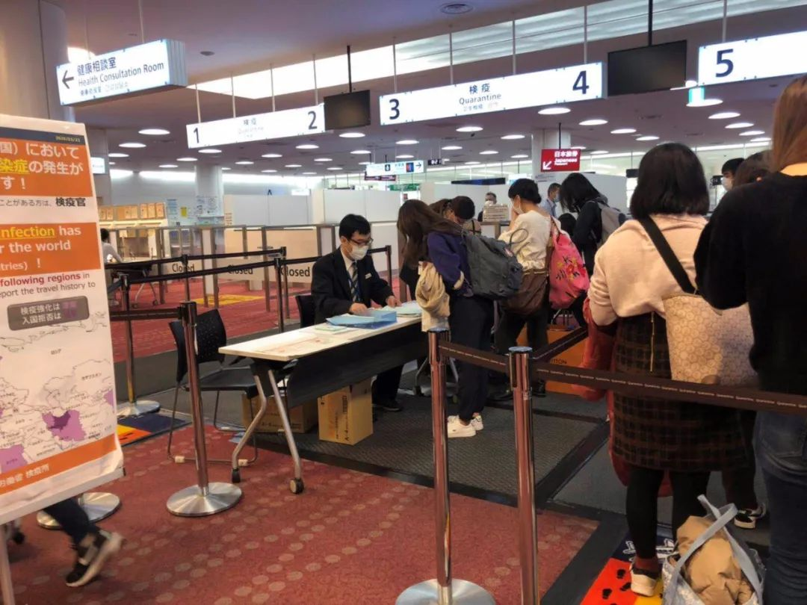
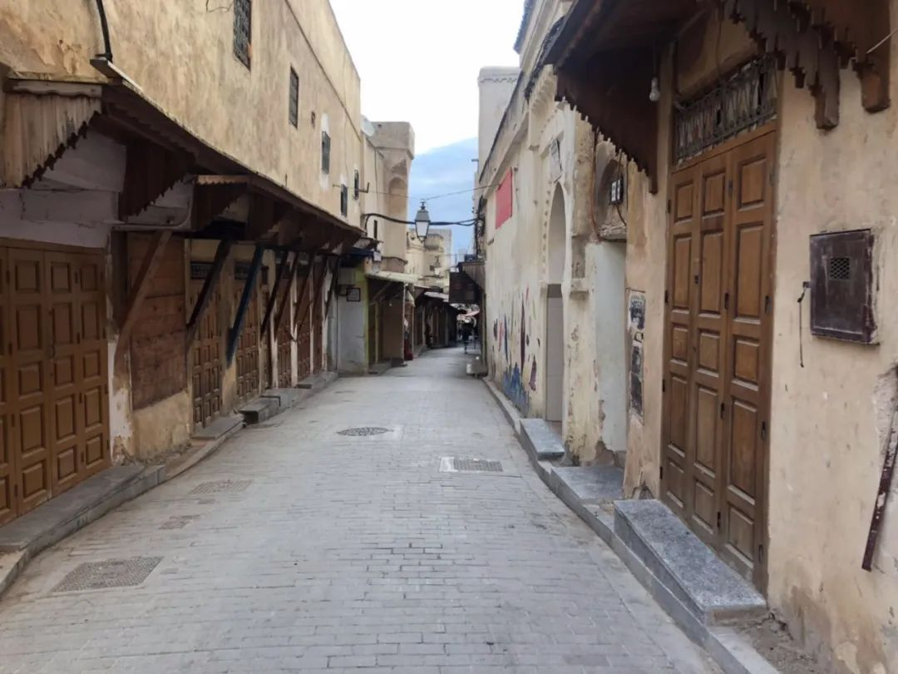
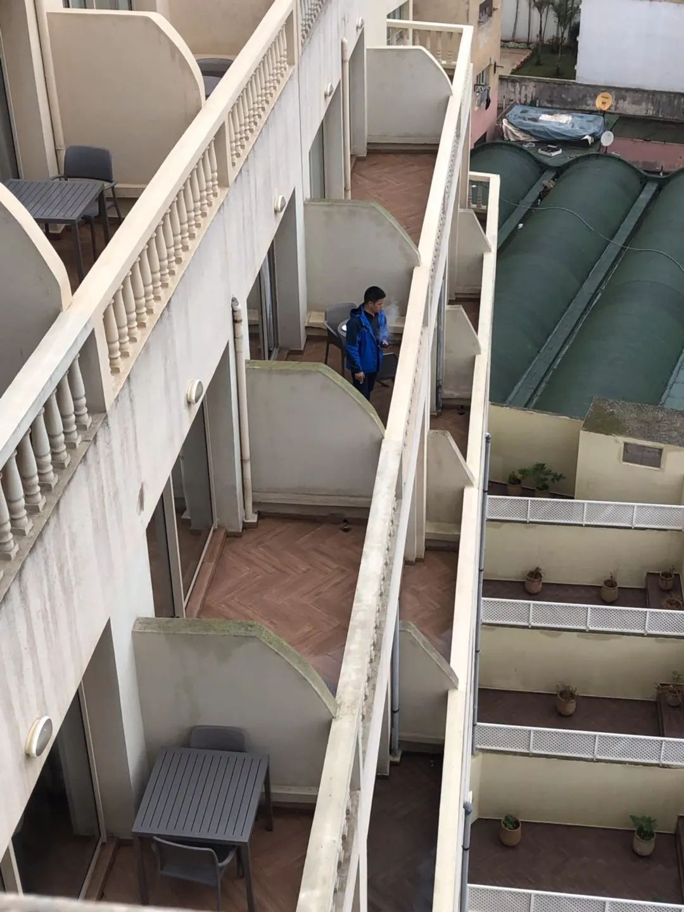

口述实录 | 万里回国后，同航班有人被确诊新冠……
原文链接 备份链接 这次疫情，也让我对祖国有了更深刻的认同，突发事件面前，我们国家的组织调配能力是一流的。 记者 | 沈 林 受访人 | 胡晓琳 最近很多在海外的同胞们都在纠结一个问题：非常时期，到底应不应该回国？或许我的经验可以给他们 …

但不论怎样，能从摩洛哥出来总归是好的。据我所知，现在仍有不少中国同胞滞留在摩洛哥，而该国戒严措施已经延长到4月了。
记 者 | 王仲昀
受访者 | 君 酱
今天（3月23日）上午，我从英国伦敦转机，终于回到日本东京。在经历数天的波折，以及近20小时的飞行后，我终于成功“逃离”摩洛哥。
在东京机场入境时，我发现日本真的把形式主义发挥到极致。过检疫区时，有申报表格的区域，但要不要填表申报，全靠个人自觉。如果来自疫情重点国，原则上离开机场后是不能乘坐公共交通或打车，需要自驾或亲朋来接。但事实是，一旦出关，就没人管你了。
但不论怎样，能从摩洛哥出来总归是好的。据我所知，现在仍有不少中国同胞滞留在摩洛哥，而该国戒严措施已经延长到4月了。

在东京入境时，经过检疫区
为什么要去摩洛哥旅行？
很多人都在问我，为什么赶在新冠肺炎疫情全球蔓延之时还出去旅行。实际上，过程中我也有过犹豫。
这些年，我一直在日本留学。我很早就计划今年３月毕业后前往摩洛哥游玩。当国内疫情暴发时，我曾有过取消出行计划的念头。但又一想，摩洛哥是北非小国，最开始一直没有确诊病例。就算是进入3月，全球疫情暴发时，摩洛哥的确诊病例仍是个位数。通过摩洛哥本地媒体的报道，我们也了解到这些极少数的确诊病例全是境外输入性病例。
加上这是我期待已久的毕业旅行，于是，我和男友3月13日还是按计划从日本出发，在卡塔尔转机后，于当地时间14日到达摩洛哥。这一路都非常顺畅，摩洛哥机场的入境检查也没有很严格。
事实上，到达当天，我就看到新闻里说，摩洛哥停飞了包括中国、法国在内的14个国家的直飞航班。不过，这件事并未引起我们的重视。在当地租了车后，我们开始了自驾游。
在著名的“蓝色小城”舍夫沙万游玩时，我们真切感受到了这场旅行注定与疫情有关。当时，有路人见到戴着口罩的我们，就一路跟着我们，不停朝我们喊“Corona”（新冠病毒）。
3月15日，摩洛哥政府又发布了一份声明，表示为抑制疫情蔓延，该国决定从16日开始暂停所有国际航班，何时恢复另行通知。看到这份声明，我真的慌了，赶紧去看返程机票，发现返回日本的机票果然被取消。
3月16日一大早，迷茫的我拨通了中国驻摩洛哥大使馆的电话。当时距离摩洛哥的“停飞”声明发布也没过太久，所以大使馆的工作人员表示他们正在寻求对策。大使馆的建议是，留在摩洛哥的大城市，保护好自己。
现在看来，这个建议是非常中肯的。一是能够在特殊时期保障自己的人身安全，二是后来才有可能去机场寻找离开的机会。
打完这通电话，我的这趟旅行也就提前结束了。因为我在浏览当地的媒体时看到，除了所有国际航班停飞外，未来48小时可能还会“封城”。我和男友便立即开车回到了卡萨布兰卡。
事后证明，“封城”确实发生了。当地时间20日下午6点起，摩洛哥的民众除非有特殊需求可以凭借通行证出门，否则一律不得出门。

后来赶往机场时，酒店为我们办理的通行证
焦虑的“滞留”
自从3月18日回到卡萨布兰卡后，我们便被困在了这个国家。我和男友始终处于神经高度紧绷的状态。
一方面，摩洛哥的确诊病例虽然尚未大幅增加，但这些天各种军队车辆开进城市的大阵仗，营造出一种异常紧张的气氛。另一方面，相信来过摩洛哥的人都知道，这里的公共卫生状况普遍堪忧。
我们每天时刻关注社交媒体上相关动态，看看能不能找到离开的办法。很快，我们发现摩洛哥好像没有真正实现“全面停飞”。国外社交媒体上，有人发布了机场的实时情况，显示机场还是有很多欧洲航班在起降。因此，这些天不少滞留的欧洲旅客通过这些航班离开了摩洛哥。

3月17日，往日热闹的菲斯古城变得非常安静
我们全程留在酒店不敢外出。随着酒店里的欧洲游客陆续离开，留下来的大多是中国人，或者亚洲面孔。3月20日下午，百般无奈的我在阳台上往下喊话。我用中文喊了句“你好”，结果得到了不少国人的回应。有一位大哥跟我们隔空聊天，表示他出差来到这里，没想到回不去了。

在酒店阳台上认识的中国大哥
我们中的很多人都保持着和中国驻摩洛哥大使馆的联系。第二次通电话时，工作人员告诉我，他已经和摩洛哥政府交涉了一整晚，就是在商议包机的事情。我们还关注了官方的微信号，并报备了个人信息，滞留人员彼此也组建了微信群。这些天关注世界疫情的人都知道，一般这是政府包机接人前的讯号之一。
但是，特殊时期这种不安的情绪让很多人一听到动静，就恨不得马上行动。群里有些旅行团等不及，想要自行联系包机离开。
3月21日，我看到有人发消息称，28日会有一班从卡塔尔转机然后到香港的航班，想要搭乘的话得先付2000元定金。虽然还有整整一周时间，仍有不少人付了定金。
由于我已经在日本找到了工作，着急赶回东京就职，我和男友没办法一直等下去。同一天，我在社交媒体上刷到马拉喀什机场还有飞往法国的航班，我们抱着碰碰运气的想法赶往了机场。
倒数第二个航班
我和男友开了3小时车，从卡萨布兰卡赶到马拉喀什机场。机场寥寥数人，几乎处于关闭状态。飞法国航班的确有，但工作人员表示只能让法国人登机。
还没来得及叹气，我们看见对面英国航空公司的柜台也还有人，便立马冲过去。这时，一位自称是美国大使馆的工作人员出现在我们面前。他询问我们是否需要帮助。我们告诉他，我们是中国人，没有美签，但居住在日本，是要回日本工作，并主动出示了中国护照和日本居住证。
该工作人员随即表示，这趟英美包机航班先去伦敦，飞机上还有空位，可以带我们离开。至于之后去哪里他们不管。另外，这趟航班对我们是免费的。
事情终于出现了转机。当我们到登机口等待时，仍是惴惴不安。因为工作人员告诉我们，还是得等等，等到他们确定没有本国公民后，我们才可以上飞机。
直到真正登上飞机的那一刻，我才长舒了一口气。据工作人员说，3月21日是摩洛哥延长领空开放的最后一天，而我们这趟航班，是整个机场当天倒数第二个航班。就在我们登机前一刻，摩洛哥又发布了封锁升级的通知。

“逃离”摩洛哥时的机场
3小时后，我们到达了伦敦希思罗机场。预想中因为没有过境签可能出现的麻烦也没有遇到，就这样我们通过特殊通道成功入境。机场也是空空荡荡，几乎没有人。
我和男友立即买了飞回日本的机票。在机场稍作休息之后，我们又登上了伦敦飞往东京的航班。
一趟毕业旅行，最后变得惊心动魄。


· 口述实录 | 中国援外抗疫包机MU7041机长：加油，意大利！请照顾好我们的医生
· 我在海外 | 眼睁睁地看着巴伐利亚州的“新冠确诊”包围圈对我家越缩越小
新民周刊所有平台稿件， 未经正式授权
一律不得转载、出版、改编或进行
与新民周刊版权相关的其他行为，违者必究


原文链接 备份链接 这次疫情，也让我对祖国有了更深刻的认同，突发事件面前，我们国家的组织调配能力是一流的。 记者 | 沈 林 受访人 | 胡晓琳 最近很多在海外的同胞们都在纠结一个问题：非常时期，到底应不应该回国？或许我的经验可以给他们 …
原文链接 备份链接 欧洲疫情不断扩散，英国确诊病例迅速增加，由于部分航班取消，在英留学生想马上回国并不容易 文丨《财经》记者 陈亮 王静仪 编辑丨施智梁 英国疫情蔓延近日明显加速。截至3月15日，英国新冠肺炎确诊病例数已达1372例，与前 …
原文链接 备份链接 在昆明的家里远程工作 2020注定是不平凡的⼀年，疫情的状况牵动着我的一举一动。圣诞节回家，本来准备过完农历春节就走，现在一月过去了，二月过去了，三月也快过去了，却不知何时或是否还能再次出发。 1月23日 上午10 …
原文链接 备份链接 一个半月前，国内的亲属和新冠疫情的发展是他们担心的事情；一个半月后，他们开始担心起了身边人和自己。 配图 | Sipa图片社 陈愿看到学校官网上挂出本科和硕士的停课通知，是在当地时间2月22日晚——那一天，意大利伦巴第 …
原文链接 备份链接 每周北京仍有国际客运航班205班抵达，首都机场口岸面临前所未有疫情输入风险 沈阳驻京办事处工作人员在准备对接旅客 文 |《财经》记者 陈亮 编辑 | 施智梁 3月22日，中国民航局、外交部、国家卫健委、海关总署、国家 …